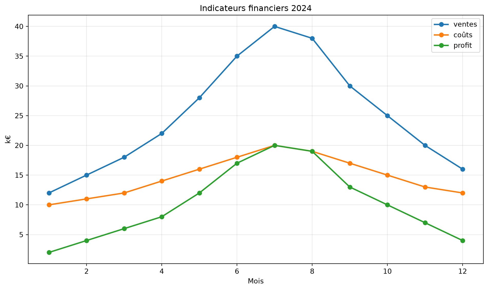

mois = list(range(1, 13))
df = pd.DataFrame({
'mois': mois,
'ventes': [12, 15, 18, 22, 28, 35, 40, 38, 30, 25, 20, 16],
'coûts': [10, 11, 12, 14, 16, 18, 20, 19, 17, 15, 13, 12],
'profit': [2, 4, 6, 8, 12, 17, 20, 19, 13, 10, 7, 4],
})
(Chart(df)
.line('mois', ['ventes', 'coûts', 'profit'], marker='o', linewidth=2)
.title('Indicateurs financiers 2024')
.labels(xlabel='Mois', ylabel='k€')
.grid(alpha=0.3)
.set_legend()
.tight_layout()
.show())